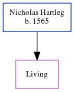

Nicholas Hartleg 1565 -
[ Home ] | [ Calendar ] | [ Surnames Index ] | [ Census Index ] | [ Family History ]Nicholas Hartleg was born in Sheffield, Yorkshire, England in 15651. He had 1 child, Anna.
Citations
- OneWorldTree Online publication - Provo, UT, USA: MyFamily.com, Inc.
Family Tree
Generated by ged2site. Last updated on Jun 11, 2024